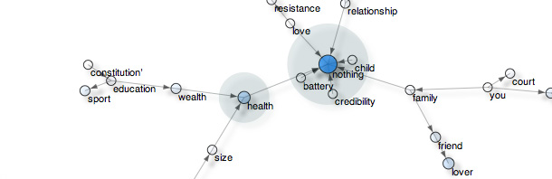
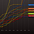

pattern
Pattern is a web mining module for the Python programming language.
It bundles tools for data mining (Google + Twitter + Wikipedia API, web crawler, HTML DOM parser), natural language processing (part-of-speech taggers, n-gram search, sentiment analysis, WordNet), machine learning (vector space model, k-means, k-NN, SVM) and network analysis (graph centrality & visualization).
The module is well-document and bundled with 30+ examples and 350+ unit tests.

Download
Pattern 2.6 | download (19MB)
Reference: De Smedt, T. & Daelemans, W. (2012). |
Tweet |
Modules
Helper modules Command-line |
Contribute |
Installation
Pattern is written for Python 2.5+ (no support for Python 3 yet). The module has no external dependencies except LSA in the pattern.vector module, which requires NumPy (installed by default on Mac OS X).
To install Pattern so that the module is available in all of your scripts, open a terminal and do:
> cd pattern-2.6 > python setup.py install
If you have pip, you can automatically download and install from the PyPi repository:
> pip install pattern
If none of the above works, you can make Python aware of the module in three ways:
- Put the pattern subfolder in the zip archive in the same folder as your script.
- Put the pattern subfolder in the standard location for modules so it is available to all scripts:
c:\python25\Lib\site-packages\ (Windows),
/Library/Python/2.6/site-packages/ (Mac OS X),
/usr/lib/python2.6/site-packages/ (Unix). - Add the location of the module to sys.path in your script, before importing it:
>>> MODULE = '/users/tom/desktop/pattern' >>> import sys; if MODULE not in sys.path: sys.path.append(MODULE) >>> from pattern.en import parse, Sentence
Quick overview
pattern.web
Module pattern.web is a web toolkit that bundles various API's (Google, Gmail, Bing, Twitter, Facebook, Wikipedia, DBPedia, Flickr, ...) with a robust HTML DOM parser and a web crawler. The module's purpose is to retrieve online content in an easy-to-use and uniform way.
>>> from pattern.web import Twitter, plaintext
>>> for tweet in Twitter().search('"more important than"', cached=False):
>>> print plaintext(tweet.text)
'The mobile web is more important than mobile apps.'
'Start slowly, direction is more important than speed.'
'Imagination is more important than knowledge. - Albert Einstein'
... pattern.en
Module pattern.en is a natural language processing (NLP) toolkit for English. English language is ambiguous, so the module uses a statistical approach + regular expressions. This means that it is fast, roughly accurate, and on occasion prone to incorrect results (see MBSP for a robust approach compatible with Pattern). It has functionality for word inflection (for example: verb conjugation and noun pluralization), a Python interface to the WordNet database, and a Brill-based text parser. A parser analyzes a text and identifies the constituents (sentences, nouns, verbs, etc.):
>>> from pattern.en import parse, pprint
>>> s = 'The mobile web is more important than mobile apps.'
>>> s = parse(s, relations=True, lemmata=True)
>>> pprint(s)
WORD TAG CHUNK ROLE ID PNP LEMMA
The DT NP SBJ 1 - the
mobile JJ NP ^ SBJ 1 - mobile
web NN NP ^ SBJ 1 - web
is VBZ VP - 1 - be
more RBR ADJP - - - more
important JJ ADJP ^ - - - important
than IN PP - - PNP than
mobile JJ NP - - PNP mobile
apps NNS NP ^ - - PNP app
. . - - - - .
Note how the sentence has been annotated with various tags, identifying for example nouns (NN), adjectives (JJ), determiners (DT), verbs (VB), noun phrases (NP), sentence subject (SBJ), and a prepositional noun phrase (PNP). A parse tree is a Python structure of linked objects in the parsed text:
>>> from pattern.en import parsetree >>> s = 'The mobile web is more important than mobile apps.' >>> t = parsetree(s) >>> for sentence in t: >>> for chunk in sentence.chunks: >>> for word in chunk.words: >>> print word, >>> print Word(u'The/DT') Word(u'mobile/JJ') Word(u'web/NN') Word(u'is/VBZ') Word(u'more/RBR') Word(u'important/JJ') Word(u'than/IN') Word(u'mobile/JJ') Word(u'apps/NNS')
Parsers for Spanish, French, Italian, German and Dutch are also available:
pattern.es | pattern.fr | pattern.it | pattern.de | pattern.nl
pattern.search
Module pattern.search contains an elegant search algorithm to retrieve sequences of words (called n-grams) from a parsed sentence.
>>> from pattern.en import parsetree
>>> from pattern.search import search
>>> s = 'The mobile web is more important than mobile apps.'
>>> t = parsetree(s, relations=True, lemmata=True)
>>>
>>> for match in search('NP be (RB)+ important than NP', t):
>>> print match.constituents()[-1], "=>", \
>>> match.constituents()[0]
Chunk('mobile apps/NP') => Chunk('The mobile web/NP-SBJ-1')
Observe the given search pattern: "NP be (RB)+ important than NP". It means: any noun phrase followed by the verb to be (is, was, ...), followed by zero or more adverbs (e.g. much, more), followed by the words important than, followed by any noun phrase. It will match any of the following variations:
- "the mobile web will be much more important than mobile apps"
- "mobile apps are less important than the mobile web"
- "a good blog is more important than a fancy facebook page", etc.
pattern.vector
>>> from pattern.web import Twitter
>>> from pattern.en import tag
>>> from pattern.vector import KNN, count
>>>
>>> twitter, knn = Twitter, KNN()
>>>
>>> for i in range(1, 10):
>>> for tweet in twitter.search('#win OR #fail', start=i, count=100):
>>> s = tweet.text.lower()
>>> p = '#win' in s and 'WIN' or 'FAIL'
>>> v = tag(s)
>>> v = [word for word, pos in v if pos == 'JJ'] # JJ = adjective
>>> v = count(v)
>>> if v:
>>> knn.train(v, type=p)
>>>
>>> print knn.classify('sweet potato burger')
>>> print knn.classify('stupid autocorrect')
'WIN'
'FAIL' pattern.graph
Module pattern.graph provides a data structure to represent relationships between nodes (e.g. words, concepts, entities ...) The relative importance (or centrality) of each node can then be calculated. Graphs can be exported as an interactive web page using the HTML <canvas> element (demo).
The screenshot shows an exported graph with nodes pointing to more important nodes (data mined from Bing). Nodes with a lot of "traffic" are marked with a shadow (e.g., health) and important nodes are marked in blue (health, nothing, lover).

Note: The nothing result could use some extra post-processing, e.g. in: nothing is more important than life, the word life is important, not the word nothing.
Source code:
>>> from pattern.web import Bing, plaintext
>>> from pattern.en import parsetree
>>> from pattern.search import search
>>> from pattern.graph import Graph, Node, Edge, export
>>>
>>> g = Graph()
>>> for i in range(10):
>>> for r in Bing().search('"more important than"', start=i+1, count=50):
>>> s = r.text.lower()
>>> s = plaintext(s)
>>> t = parsetree(s)
>>> p = '{NP} (VP) more important than {NP}'
>>> for m in search(p, t):
>>> a = m.group(1).string # Left NP.
>>> b = m.group(2).string # Right NP.
>>> if a not in g:
>>> g.add_node(a, radius=5, stroke=(0,0,0,0.8))
>>> if b not in g:
>>> g.add_node(b, radius=5, stroke=(0,0,0,0.8))
>>> g.add_edge(g[b], g[a], stroke=(0,0,0,0.6))
>>>
>>> g = g.split()[0] # Largest subgraph.
>>>
>>> for n in g.sorted()[:40]: # Sorted by Node.weight.
>>> n.fill = (0.0, 0.5, 1.0, 0.7 * n.weight)
>>>
>>> export(g, 'test', directed=True, weighted=0.6, distance=6)
Examples & experiments
| Modeling creativity with a semantic network of common sense Say the mind is a map of concepts with paths in between. Creativity pertains to how these paths are traversed when we think (or daydream). In this case study we model such a map, using a semantic network of common sense. read more |
|
| Using Wiktionary to build an Italian part-of-speech tagger This case study provides source code examples and a walkthrough on how to use Pattern to build an Italian part-of-speech tagger that identifies words and their role in a sentence, based on data mined from Wiktionary and Wikipedia. read more |
|
| Using Wikicorpus & NLTK to build a Spanish part-of-speech tagger This case study provides source code examples and a walkthrough on how to train a new Spanish part-of-speech tagger for Pattern, using NLTK and the freely available Spanish Wikicorpus. read more |
|
|  | Belgian elections, June 13, 2010 – Twitter opinion mining After the fall of the previous government, the New Flemish Alliance emerged as the plurality party with 27 seats. In the week before the elections we analyzed 7,600 tweets that mentioned the name of a Belgian politician. read more |
 |
November 2010 – March 2011, 100 days of web mining During a 100-day period, we collected 6,400 Google News items and 70,000 tweets with the goal of finding a correlation between important news items and personal opinions on Twitter. What we got was profanity, mostly. read more |